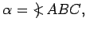

Eine Figur, die aus zwei, einer Geraden entspringenden Halbebenen gebildet wird, heißt Kante oder Zweiflach.
Im täglichen Sprachgebrauch versteht man im Unterschied zu dieser Definition unter einer Kante die Schnittgerade zweier Halbebenen. Als Kantenmaß dient der ebene Kantenwinkel  den zwei im Innern der Ebenen senkrecht auf die Schnittgerade DE in den Punkt B gefällte Lote miteinander bilden.